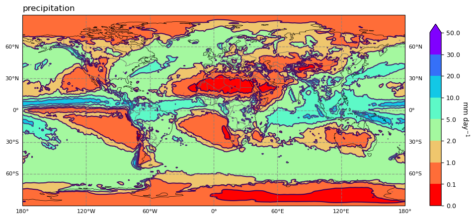

Introduction
Introduction#
For the following you may like to look at the first at the introductory videos in ClimateUnboxed on
ERA5 access
API access
ncview
import cdsapi
c = cdsapi.Client()
from netCDF4 import Dataset,num2date
import matplotlib.pyplot as plt
import cartopy.crs as ccrs
import cartopy.feature as cfea
import cartopy.util as cutil
import matplotlib as mplt
import numpy as np
from mpl_toolkits.axes_grid1 import make_axes_locatable
from cdo import Cdo
import os
cdo=Cdo()
scr="/Users/tompkins/Downloads/"
---------------------------------------------------------------------------
ModuleNotFoundError Traceback (most recent call last)
Cell In[1], line 6
4 from netCDF4 import Dataset,num2date
5 import matplotlib.pyplot as plt
----> 6 import cartopy.crs as ccrs
7 import cartopy.feature as cfea
8 import cartopy.util as cutil
ModuleNotFoundError: No module named 'cartopy'
def plot_map(ifile,title="",varname="",sf=1.0,units='mm day$^{-1}$',cmap="BrBG",levels=[0,0.1,1,2,5,10,20,30,50]):
projection=ccrs.PlateCarree()
bbox=[-180,180,-90,90];creg='glob'
mplt.rc('xtick', labelsize=9)
mplt.rc('ytick', labelsize=9)
# read the netcdf data
nc = Dataset(ifile,'r')
lat = nc.variables['latitude'][:]
lon = nc.variables['longitude'][:]
data = nc.variables[varname][0,:,:]*sf
nc.close()
#
lon2d, lat2d = np.meshgrid(lon, lat)
cdata, clon2d, clat2d = cutil.add_cyclic(data,lon2d,lat2d)
# set up the figure size
fig=plt.figure(figsize=(11,5))
ax=fig.add_subplot(1,1,1,projection=projection)
ax.set_extent(bbox,projection)
# add map features
ax.add_feature(cfea.COASTLINE,lw=.5)
#ax.add_feature(cfea.RIVERS,lw=.5)
ax.add_feature(cfea.BORDERS, linewidth=0.6, edgecolor='dimgray')
# add gridlines
gl = ax.gridlines(crs=ccrs.PlateCarree(), draw_labels=True,
linewidth=1.0, color='gray', alpha=0.7, linestyle='--')
gl.top_labels = False
gl.left_labels = True
gl.right_labels = True
gl.xlabel_style = {'size': 8, 'color': 'black'}
gl.ylabel_style = {'size': 8, 'color': 'black'}
# specify levels and colormap
#levels=[0,0.1,0.2,0.5,1,2,5,10,20,30,50]
cmap=plt.cm.BrBG
cmap=plt.cm.rainbow_r
norm=mplt.colors.BoundaryNorm(levels,cmap.N)
# make plot
pc=ax.contour(clon2d,clat2d,cdata,levels=levels,transform=projection)
pc=ax.contourf(clon2d,clat2d,cdata,levels=levels,transform=projection,cmap=cmap,norm=norm,extend='max')
divider = make_axes_locatable(ax)
ax_cb = divider.new_horizontal(size="3%", pad=0.5, axes_class=plt.Axes)
cbar=fig.colorbar(pc,extend='both', cax=ax_cb)
fig.add_axes(ax_cb)
# add colorbar
fig.colorbar(pc,extend='both',cax=ax_cb)
cbar.ax.get_yaxis().labelpad = 15
cbar.ax.set_ylabel(units, rotation=270)
cbar.ax.set_title('')
# add title
ttitle=title
ax.set_title(ttitle,loc='left',fontsize=12)
ifile=scr+"precip.nc"
varlist=['sea_surface_temperature', 'surface_latent_heat_flux', 'surface_net_solar_radiation',
'surface_net_thermal_radiation', 'surface_sensible_heat_flux', 'top_net_solar_radiation',
'top_net_thermal_radiation', 'total_column_water_vapour', 'total_precipitation']
c.retrieve(
'reanalysis-era5-single-levels-monthly-means',
{
'format': 'netcdf',
'year': '2020',
'month': [
'01', '02', '03',
'04', '05', '06',
'07', '08', '09',
'10', '11', '12',
],
'product_type': 'monthly_averaged_reanalysis',
'variable': varlist,
'grid':[1.0,1.0],
'time': '00:00',
},
ifile)
2023-11-13 13:08:53,300 INFO Welcome to the CDS
2023-11-13 13:08:53,301 INFO Sending request to https://cds.climate.copernicus.eu/api/v2/resources/reanalysis-era5-single-levels-monthly-means
2023-11-13 13:08:53,457 INFO Request is queued
2023-11-13 13:09:26,320 INFO Request is running
2023-11-13 13:09:43,435 INFO Request is completed
2023-11-13 13:09:43,436 INFO Downloading https://download-0005-clone.copernicus-climate.eu/cache-compute-0005/cache/data7/adaptor.mars.internal-1699877374.0481625-4398-2-a24cf865-2f12-49aa-ad0f-e2ac9947633f.nc to /Users/tompkins/Downloads/precip.nc (13.4M)
2023-11-13 13:09:49,542 INFO Download rate 2.2M/s
Result(content_length=14080360,content_type=application/x-netcdf,location=https://download-0005-clone.copernicus-climate.eu/cache-compute-0005/cache/data7/adaptor.mars.internal-1699877374.0481625-4398-2-a24cf865-2f12-49aa-ad0f-e2ac9947633f.nc)
ofile=scr+"yearmean.nc"
ofilejja=scr+"JJAmean.nc"
ofiledjf=scr+"DJFmean.nc"
cdo.timmean(input="-aexpr,pr=1000*tp "+ifile,output=scr+"yearmean.nc",options="-b f32")
cdo.timmean(input="-selmon,12,1,2 -aexpr,pr=1000*tp "+ifile,output=scr+"DJFmean.nc",options="-b f32")
cdo.timmean(input="-selmon,6,7,8 -aexpr,pr=1000*tp "+ifile,output=scr+"JJAmean.nc",options="-b f32")
'/Users/tompkins/Downloads/JJAmean.nc'
# let's have a look to see what there is in the file:
os.system("ncdump -h "+ofile)
netcdf yearmean {
dimensions:
time = UNLIMITED ; // (1 currently)
bnds = 2 ;
longitude = 360 ;
latitude = 181 ;
variables:
int time(time) ;
time:standard_name = "time" ;
time:long_name = "time" ;
time:bounds = "time_bnds" ;
time:units = "hours since 1900-01-01 00:00:00.0" ;
time:calendar = "gregorian" ;
time:axis = "T" ;
double time_bnds(time, bnds) ;
float longitude(longitude) ;
longitude:standard_name = "longitude" ;
longitude:long_name = "longitude" ;
longitude:units = "degrees_east" ;
longitude:axis = "X" ;
float latitude(latitude) ;
latitude:standard_name = "latitude" ;
latitude:long_name = "latitude" ;
latitude:units = "degrees_north" ;
latitude:axis = "Y" ;
float sst(time, latitude, longitude) ;
sst:long_name = "Sea surface temperature" ;
sst:units = "K" ;
sst:_FillValue = -32767.f ;
sst:missing_value = -32767.f ;
sst:cell_methods = "time: mean" ;
float slhf(time, latitude, longitude) ;
slhf:standard_name = "surface_upward_latent_heat_flux" ;
slhf:long_name = "Surface latent heat flux" ;
slhf:units = "J m**-2" ;
slhf:_FillValue = -32767.f ;
slhf:missing_value = -32767.f ;
slhf:cell_methods = "time: mean" ;
float ssr(time, latitude, longitude) ;
ssr:standard_name = "surface_net_downward_shortwave_flux" ;
ssr:long_name = "Surface net short-wave (solar) radiation" ;
ssr:units = "J m**-2" ;
ssr:_FillValue = -32767.f ;
ssr:missing_value = -32767.f ;
ssr:cell_methods = "time: mean" ;
float str(time, latitude, longitude) ;
str:standard_name = "surface_net_upward_longwave_flux" ;
str:long_name = "Surface net long-wave (thermal) radiation" ;
str:units = "J m**-2" ;
str:_FillValue = -32767.f ;
str:missing_value = -32767.f ;
str:cell_methods = "time: mean" ;
float sshf(time, latitude, longitude) ;
sshf:standard_name = "surface_upward_sensible_heat_flux" ;
sshf:long_name = "Surface sensible heat flux" ;
sshf:units = "J m**-2" ;
sshf:_FillValue = -32767.f ;
sshf:missing_value = -32767.f ;
sshf:cell_methods = "time: mean" ;
float tsr(time, latitude, longitude) ;
tsr:standard_name = "toa_net_upward_shortwave_flux" ;
tsr:long_name = "Top net short-wave (solar) radiation" ;
tsr:units = "J m**-2" ;
tsr:_FillValue = -32767.f ;
tsr:missing_value = -32767.f ;
tsr:cell_methods = "time: mean" ;
float ttr(time, latitude, longitude) ;
ttr:standard_name = "toa_outgoing_longwave_flux" ;
ttr:long_name = "Top net long-wave (thermal) radiation" ;
ttr:units = "J m**-2" ;
ttr:_FillValue = -32767.f ;
ttr:missing_value = -32767.f ;
ttr:cell_methods = "time: mean" ;
float tcwv(time, latitude, longitude) ;
tcwv:standard_name = "lwe_thickness_of_atmosphere_mass_content_of_water_vapor" ;
tcwv:long_name = "Total column vertically-integrated water vapour" ;
tcwv:units = "kg m**-2" ;
tcwv:_FillValue = -32767.f ;
tcwv:missing_value = -32767.f ;
tcwv:cell_methods = "time: mean" ;
float tp(time, latitude, longitude) ;
tp:long_name = "Total precipitation" ;
tp:units = "m" ;
tp:_FillValue = -32767.f ;
tp:missing_value = -32767.f ;
tp:cell_methods = "time: mean" ;
float pr(time, latitude, longitude) ;
pr:_FillValue = -32767.f ;
pr:missing_value = -32767.f ;
pr:cell_methods = "time: mean" ;
// global attributes:
:CDI = "Climate Data Interface version 2.2.4 (https://mpimet.mpg.de/cdi)" ;
:Conventions = "CF-1.6" ;
:history = "Mon Nov 13 19:20:26 2023: cdo -O -s -b f32 -timmean -aexpr,pr=1000*tp /Users/tompkins/Downloads/precip.nc /Users/tompkins/Downloads/yearmean.nc\n",
"2023-11-13 12:09:34 GMT by grib_to_netcdf-2.25.1: /opt/ecmwf/mars-client/bin/grib_to_netcdf.bin -S param -o /cache/data7/adaptor.mars.internal-1699877374.0481625-4398-2-a24cf865-2f12-49aa-ad0f-e2ac9947633f.nc /cache/tmp/a24cf865-2f12-49aa-ad0f-e2ac9947633f-adaptor.mars.internal-1699877364.040831-4398-2-tmp.grib" ;
:CDO = "Climate Data Operators version 2.2.2 (https://mpimet.mpg.de/cdo)" ;
}
0
plot_map(scr+"yearmean.nc",title="precipitation",varname="pr",units='mm day$^{-1}$',cmap="Blues")
# you can save any figures in this way:
#plt.savefig("precip_2020.pdf")
plt.show()

plot_map(ofilejja,title="precipitation JJA",varname="pr",units='mm day$^{-1}$')
plt.show()

plot_map(ofiledjf,title="precipitation JJA",varname="pr",units='mm day$^{-1}$')
plt.show()
# TCWV
plot_map(ofile,title="TWCV",varname="tcwv",levels=[0,3,5,10,20,30,40,50,60],units='kg m$^{-2}$')
plt.show()

plot_map(ofile,title="TOA OLR",varname="ttr",sf=1./86400.,units='W m$^{-2}$',levels=list(range(-300,-100,20)))
plt.show()
#plot_map(ofile,title="T",varname="tcwv",levels=[0,3,5,10,20,30,40,50,60],units='kg m$^{-2}$')
#plt.show()

Now try to duplicate this and make plots for
solar radiation
net radiation
surface fluxes
for the annual mean, and the seasons.
You can also open the netcdf files directly from the command line in ncview if you prefer.